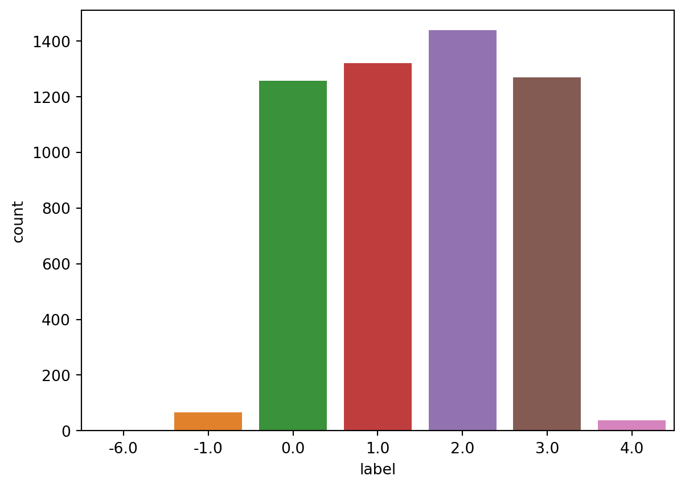
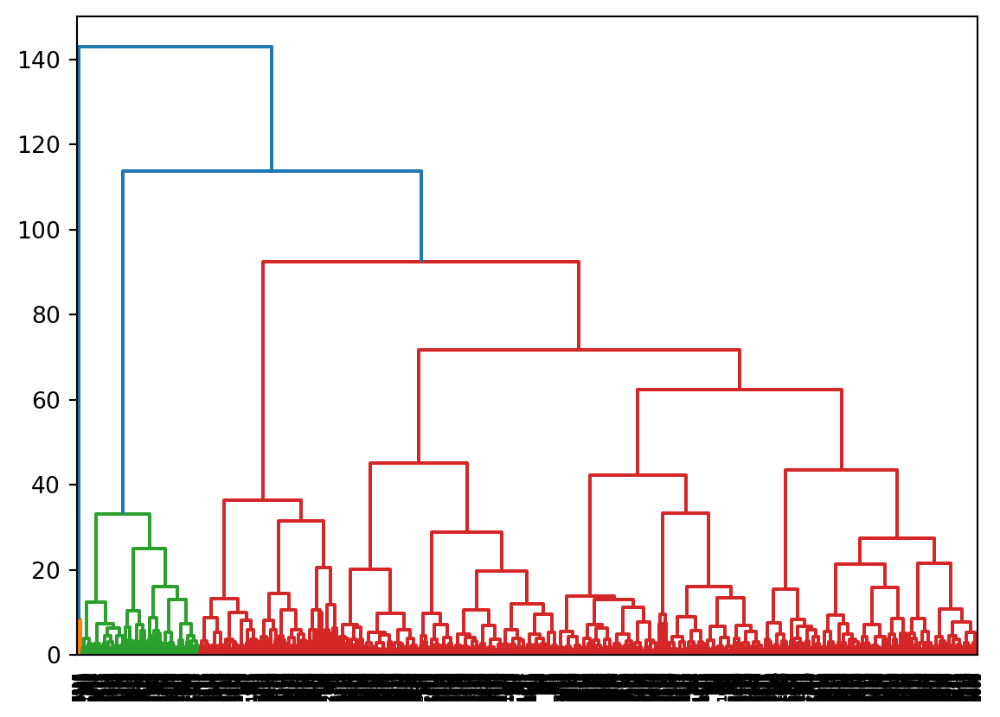

I am using clustering trying to find the the relationship between my data. Clustirng is an unsupervised machine learning task. The feature data x includs Entity, Year, GDP, Deaths, Births, Life expectancy and DALYs (Disability-Adjusted Life Years).I am tring to find the relationship between the x feature.
Code
import pandas as pdimport numpy as npimport seaborn as snsimport matplotlib.pyplot as pltfrom sklearn.preprocessing import StandardScalerfrom sklearn.cluster import KMeansfrom scipy.spatial.distance import cdistfrom sklearn.cluster import DBSCANfrom scipy.cluster.hierarchy import dendrogram, linkagefrom sklearn.cluster import AgglomerativeClustering
Code
#clean the datapopulation = pd.read_csv('../../data/01-modified-data/cleaned-population-py.csv')population = population.drop(columns=['Unnamed: 0'])# Replace categorical values with category codes by using the cat.codes functionpopulation['Entity']=population['Entity'].astype('category').cat.codespopulation.head()
Entity
Year
Natural_growth_rate
GDP
Deaths
Births
Life
Disability
0
0
2002
3.69
1189.784668
229450
980458.0
56.784
78088.270828
1
0
2003
3.67
1235.810059
240215
1063246.0
57.271
75103.762176
2
0
2004
3.61
1200.277954
243367
1097160.0
57.772
73137.361976
3
0
2005
3.53
1286.793701
241454
1099366.0
58.290
71629.722924
4
0
2006
3.50
1315.789062
246037
1136774.0
58.826
70807.147852
Code
population['label']=np.round(population['Natural_growth_rate'])population=population.drop('Natural_growth_rate', axis=1)print(population['label'].unique())sns.countplot(population['label'])print(len(population['label']))# drop unique value population=population.loc[population['label']!=-6,:]print(len(population['label']))
[ 4. 3. 2. 1. 0. -1. -6.]
5388
5387
C:\Users\Shenghao\anaconda3\envs\ANLY501\lib\site-packages\seaborn\_decorators.py:36: FutureWarning: Pass the following variable as a keyword arg: x. From version 0.12, the only valid positional argument will be `data`, and passing other arguments without an explicit keyword will result in an error or misinterpretation.
warnings.warn(

Code
# Split the dataset in X and y. since this is unsupervised learning, we will not use the y labels. you can y = population['label']x = population.drop('label', axis=1)
Code
#choose to normalize the X data by using the StandardScaler function.scalar=StandardScaler()scalar.fit(x)x=scalar.transform(x)
Perform K-means
The purpose of k-means clustering is to divide n observations into k clusters, each belonging to the cluster with the closest mean, as the prototype of that cluster. I am using elbow method to find the optimal number of the clusters.
Code
# for k means clustering we will use the elbow method to find the optimal number of clusters.distortions=[]inertias=[]k=11OMP_NUM_THREADS=2for k inrange(1,k): kmeanModel = KMeans(n_clusters=k,init ='k-means++',random_state=42) kmeanModel.fit(x) distortions.append(sum(np.min(cdist(x,kmeanModel.cluster_centers_,'euclidean'),axis=1))/x.shape[0]) inertias.append(kmeanModel.inertia_) evaluation=pd.DataFrame.from_records({'Cluster':np.arange(1,k+1),'Distortion':distortions,'Inertia':inertias})evaluation
From the plot above, we can find the best k is 4. Life expectancy and GDP are roughly positively correlated
Perform DBSCAN and predict the labels
DBSAN clustering can find the clusters with noise. It represents density-based spatial clustering.
Code
# perform DBSCAN clustering. use the eps and min_samples parameters to find the optimal number of clusters. plot the number of clusters vs the silhouette score. Suggest the optimal number of clusters based on the plot.model= DBSCAN(eps=2.5, min_samples=2).fit(x)labels_DB=model.labels_
Hierarchical clustering
Hierarchical clustering is a tree based clustring.
# create linkage for agglomerative clustering, and the dendrogram for the linkage. Suggest the optimal number of clusters based on the dendrogram.Z=linkage(x,method='ward')dend=dendrogram(Z)

Mean Shift
Code
# Perform MeanShift Clustering and predict number from sklearn.cluster import MeanShift, estimate_bandwidthfrom itertools import cyclemodel = MeanShift(bandwidth=2).fit(x)labels = model.labels_cluster_centers = model.cluster_centers_labels_unqiue = np.unique(labels)n_clusters_ =len(labels_unqiue)print("number of estimated clusters: %d"% n_clusters_)
number of estimated clusters: 4
Birch
Code
# perform birc clustering and predict number of clustersfrom sklearn.cluster import Birchx=np.ascontiguousarray(x)brc = Birch(n_clusters =4).fit(x)labels_brc=brc.predict(x)labels_brc
array([0, 0, 0, ..., 0, 0, 0], dtype=int64)
Results
Compare these method, the bset is k mean clusterng. the best k for the k mean clustering is 4. There are some feature in the X have relationship. For the y, there are 6 labels, however fro the clustering the best is 4 labels.
Conclusions
GDP and Life expectancy seem to have some effect on the natural birth rate.